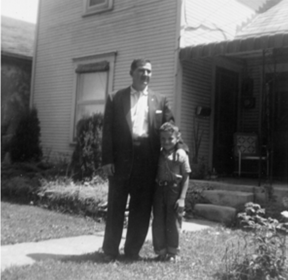

Richard Straw
Retrospective Haibun, or Why I Love the Past
I’m a writer with strong nostalgic longings. So, it's only natural that one of my favorite essayists is Charles Lamb, someone else who labored for decades as a harmless office worker and who also longed for and wrote mostly about the past.
Gerald Monsman talks academically about this aspect of Charles Lamb in Confessions of a Prosaic Dreamer: Charles Lamb's Art of Autobiography (Durham, NC: Duke University Press, 1984). For example, see pp. 40-42:
Because quotidian or physical reality presents itself as a privation, Lamb's work is "mainly retrospective," as Walter Pater noted...For Elia, the South-Sea House in its desolation becomes a symbol of all vanished glory―all forms of absence or distance in space, time, and consciousness that undermine the original grounding of reality...In the "Oxford" essay, Elia shifts his scene analogously, moving from the outer world of the present to an interior world of the past in quest of a reality that will underwrite existence...The present is always "flat, jejune" (lacking nourishing quality), and the past seems to beckon men to an escape from the insipid starved present.
Monsman then quotes from Lamb's "Oxford in the Vacation," the second in the Essays of Elia:
Antiquity! thou wondrous charm, what art thou? that, being nothing, art every thing! When thou wert, thou wert not antiquity—then thou wert nothing, but hadst a remoter antiquity, as thou called'st it, to look back to with blind veneration; thou thyself being to thyself flat, jejune, modern! What mystery lurks in this retroversion? or what half Januses are we, that cannot look forward with the same idolatry with which we for ever revert! The mighty future is as nothing, being every thing! the past is every thing, being nothing!
I titled my first collection of haibun The Longest Time because the past is the time that I've lived in and think about the most. The present is so fleeting it's almost nonexistent, and the future of course is unknown. This situation is bound to intensify as I age.
* This is a reprint from Haibun Today, 2009.
Richard Straw
Stronger Grip
On a Sunday morning, dad's sitting in a private hospital room by a sunlit window. He tells me his doctors have agreed to let him use a chair even though he can't get out of it by himself. He says they haven't decided yet whether to do more cutting or more chemotherapy or nothing at all: "But they'll get paid whatever they do . . ."
I tell him that I have to hurry back to the airport for a midday flight. Then I reach for his hand, and we play an old game: "Who has the stronger grip?" This time, I let him win. I try to smile as I say, "Bye, take care."
Outside his room, a medication nurse listens to me stammer, "Check . . . him . . . make sure . . . doesn't fall . . ." But I can't complete a sentence.
I rush into a bathroom and begin sobbing. I continue to cry in the empty elevator, then in the rental car all the way to the airport, quieting finally on the packed plane.

Easter snapshot
a boy and his dad
cast one shadow
* This haibun was first published in bottle rockets #19, August 2008.
Editor's Note: In the summer of 2019, Richard Straw expanded his 2009 chapbook, The Longest Time. The book now includes not
only all of the haibun that appeared in his original chapbook (rearranged), but also those published since 2009, as well as
10 or so of his published essays and a foreword by Patricia Prime. Anyone interested in receiving a free PDF of his 122-page book (9.3 MB) can request one by sending the author an e-mail (strawr at gmail dot com). |